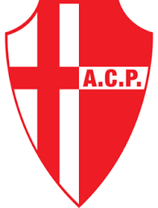

Padova

Il Calcio Padova, meglio noto come Padova, è una società calcistica italiana con sede nella città di Padova. Milita in Serie C, la terza divisione del campionato italiano. Per la stagione 2025-2026 ha acquisito il diritto a militare in Serie B.
Il sodalizio attuale è nato il 24 luglio 2014 come Biancoscudati Padova dopo la non iscrizione ai campionati della precedente Associazione Calcio Padova fondata nel 1910, della cui tradizione calcistica cittadina si fa portatore.
Fra i migliori risultati della formazione veneta figurano il terzo posto nel campionato di Serie A 1957-1958, la finale di Coppa Italia 1966-1967, la vittoria della Coppa Italia Semiprofessionisti 1979-1980 e della Coppa Italia Serie C 2021-2022 oltreché le finali di Coppa Rappan 1962-1963 e della Coppa Anglo-Italiana 1983; in ambito giovanile, il successo nel Campionato Primavera 1965-1966 riservato ai cadetti. Occupa il 22º posto nella tradizione sportiva dei club che hanno giocato in A e il 29º posto nella classifica perpetua, vantando 16 presenze nella massima serie italiana da quando esiste il girone unico, l'ultima nel 1996.
La classica maglia della formazione padovana è bianca con dettagli rossi; sul petto reca lo scudo cittadino, una croce rossa su sfondo bianco, da cui il soprannome di biancoscudati dei suoi giocatori.